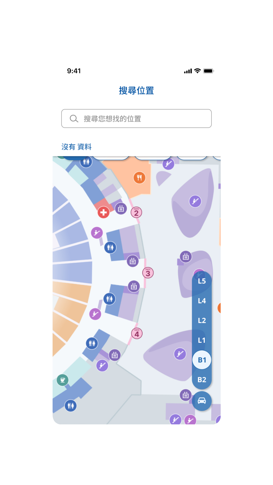
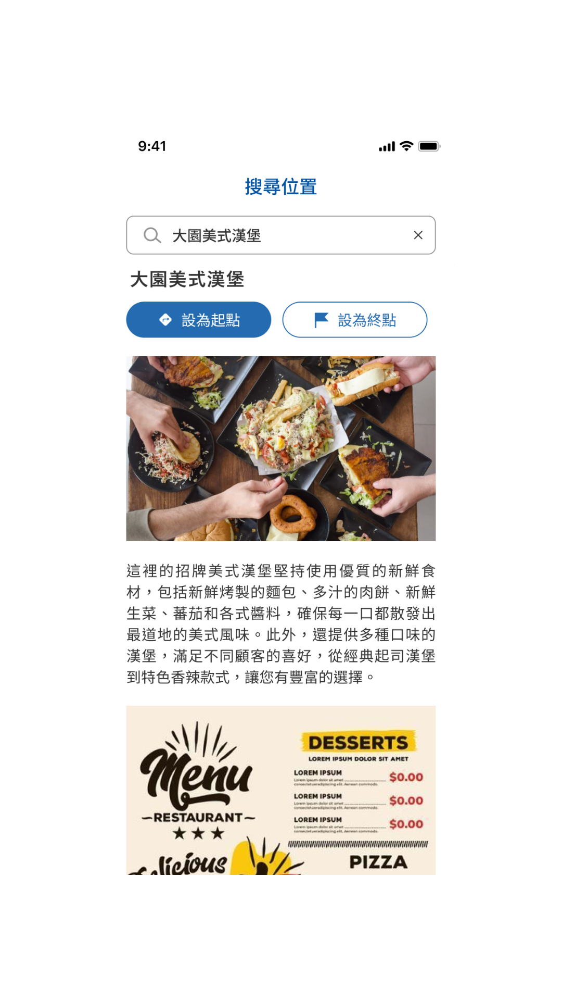
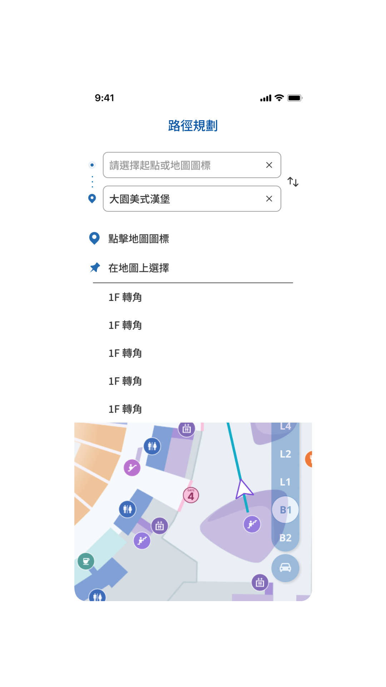
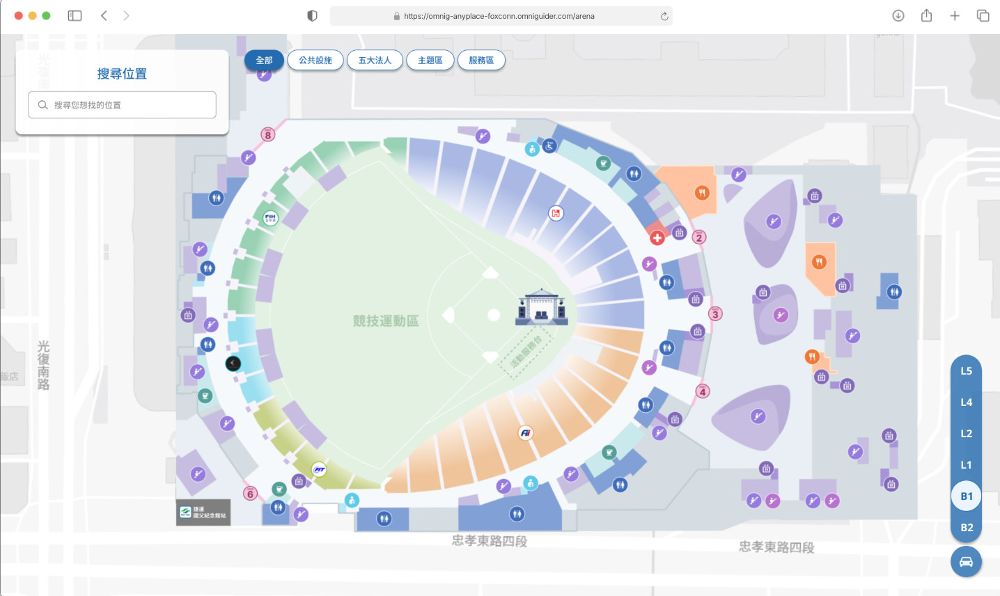
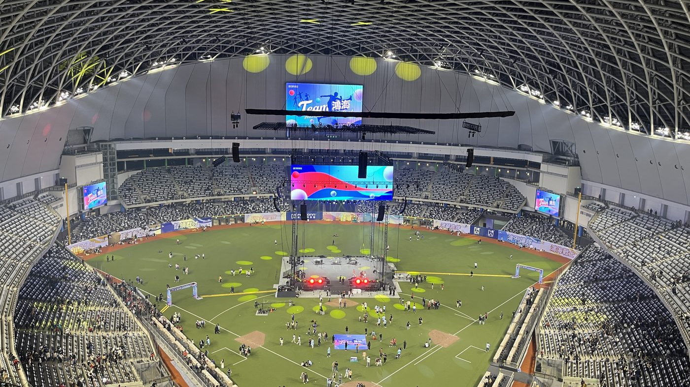
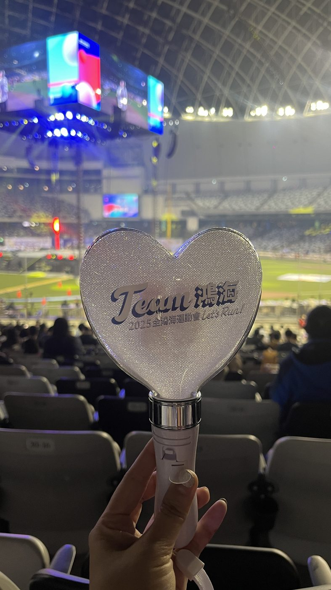

← BACK TO ARCHIVE
WAYFINDING · LARGE-SCALE · 2025
2025鴻海嘉年華運動會
2025鴻海嘉年華運動會
活動導覽系統
Foxconn Carnival Navigation
VISIT LIVE SITE ↗
Foxconn Carnival Navigation
VISIT LIVE SITE ↗為鴻海科技集團 3.5 萬名員工及眷屬打造大巨蛋年度嘉年華導覽 App，以無障礙導航為核心設計目標，讓大型場館裡的每個人都能安心找到路。
大巨蛋樓層多、動線交錯，加上活動當天人潮眾多，員工與眷屬（含長輩、孩童）都需要能快速理解的導覽方式，同時要兼顧無障礙使用需求。
我主導規劃使用者旅程與介面規範，建立部門顏色分區系統與共用元件，把複雜的場館資訊架構簡化成一眼可辨識的視覺語言，並確保 App 與網頁版之間的導航體驗一致。大巨蛋現場多為階梯式動線，我在路徑規劃中加入「步行／無障礙」雙模式切換，讓輪椅使用者能取得專屬的無障礙路徑，將無障礙導航列為貫穿整體的核心設計目標。
App 服務逾 3.5 萬名使用者，支撐了鴻海科技集團年度大型嘉年華的現場導覽需求；同時沉澱出一套可延續、可擴充的大型場館導覽設計系統，供後續同類活動沿用。
從路徑規劃到跨樓層導航，這是鴻海嘉年華導覽 App 手機版與網頁版的實際操作畫面，包含「步行／無障礙」雙模式切換功能。







網頁版 · 大巨蛋整體場館地圖

網頁版 · 步行／無障礙雙模式切換

網頁版 · POI 詳細資訊卡片
2025 年 1 月 24 日，鴻海科技集團首次於台北大巨蛋舉辦年度嘉年華。以下是活動現場實拍畫面，以及系統實際上線後的操作錄影。

大巨蛋活動現場 · 逾 3.5 萬人齊聚 B1 樓層區域位置圖看板
B1 樓層區域位置圖看板

Team鴻海 · 現場應援手燈